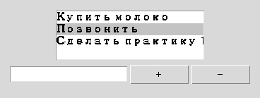

Глава 16 · Создаём классные приложения с Tkinter
Мини-проект: список задач
Простой список строк — и уже целое маленькое приложение с сохранением между запусками.
Список задач — интеграция главы 11 (списки), главы 15 (JSON) и Tkinter (Listbox).
tasks : list[str]
отображение
↓Listbox
callback
↓add_task() / remove_task()
персистентность
↓todo.json
todo_logika.py
import json
from pathlib import Path
def load_tasks(path):
if not path.exists():
return []
with path.open("r", encoding="utf-8") as f:
return json.load(f)
def save_tasks(path, tasks):
with path.open("w", encoding="utf-8") as f:
json.dump(tasks, f, ensure_ascii=False, indent=2)
def add_task(tasks, text):
if not text.strip():
return tasks
return tasks + [text.strip()]
def remove_task(tasks, index):
return tasks[:index] + tasks[index + 1:]
Отдельные функции-callback без класса — источник ошибки
Callback вроде
on_add(), объявленный сам по себе (не внутри другой функции), не может использовать nonlocal tasks — nonlocal требует переменную из объемлющей функции, а не из глобальной области. Здесь уместнее класс приложения (глава 14) — self.tasks решает эту проблему естественно.todo_gui.py
class TodoApp:
def __init__(self, root, path):
self.root = root
self.path = path
self.tasks = load_tasks(path)
self.new_task_var = tk.StringVar()
self.listbox = tk.Listbox(root, height=6)
self.listbox.pack()
entry = ttk.Entry(root, textvariable=self.new_task_var)
entry.pack(side="left", fill="x", expand=True)
ttk.Button(root, text="+", command=self.on_add).pack(side="left")
ttk.Button(root, text="−", command=self.on_delete).pack(side="left")
self.refresh_listbox()
def refresh_listbox(self):
self.listbox.delete(0, "end")
for task in self.tasks:
self.listbox.insert("end", task)
def on_add(self):
self.tasks = add_task(self.tasks, self.new_task_var.get())
self.new_task_var.set("")
self.refresh_listbox()
save_tasks(self.path, self.tasks)
def on_delete(self):
selected = self.listbox.curselection()
if not selected:
return
self.tasks = remove_task(self.tasks, selected[0])
self.refresh_listbox()
save_tasks(self.path, self.tasks)Логика проверяема без единого виджета
add_task, remove_task, load_tasks, save_tasks — обычные функции со списками и словарями. Именно их и тестирует практика этого раздела — ровно то разделение, о котором шла речь в разделе 16.24.Практика: логика списка задач
Проверяется без tkinter — на функциях работы со списком задач